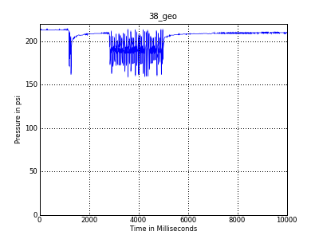

<table id="regresults" summary="38_geo" >
    <thead`
    	<tr>
        	<th scope="col" class="rounded-company" colspan='4'>38_geo</th>
        </tr>
    </thead>
        <tfoot>
    	<tr>
        	<td colspan="3" class="rounded-foot-left"><em><a href="38_geo/38_geo.csv" target="_blank">Raw Data in csv format</a></em></td>
        	<td class="rounded-foot-right">&nbsp;</td>
        </tr>
    </tfoot>
    <tbody>
    	<tr>
        	<td colspan="3">DM7 on 03/20/09 at 15bps, of note is that the geo is on the ragged edge of adjustability here, so this is not a true test of the geos performance</td>
        	<td></td>
        </tr>
        <tr>
        	<td colspan='2'><a href="38_geo/38_geo.png" target="_blank"></a></td>
            <td colspan='2'><a href="regtesting/38_geo/38_geo_single.png" target="_blank"></a></td>
        </tr>
        
        <tr>
        	
        </tr>
    </tbody>
</table>
